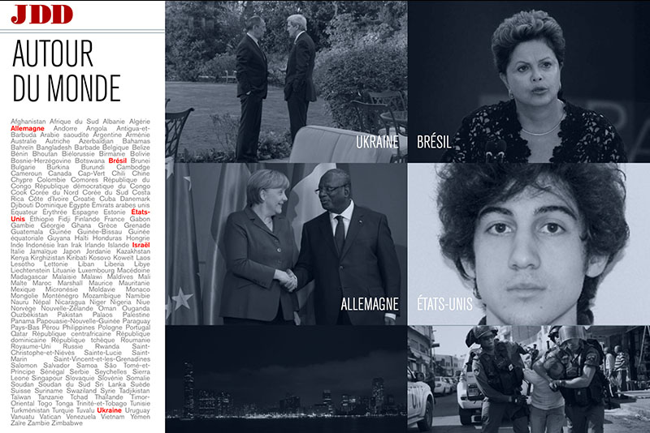
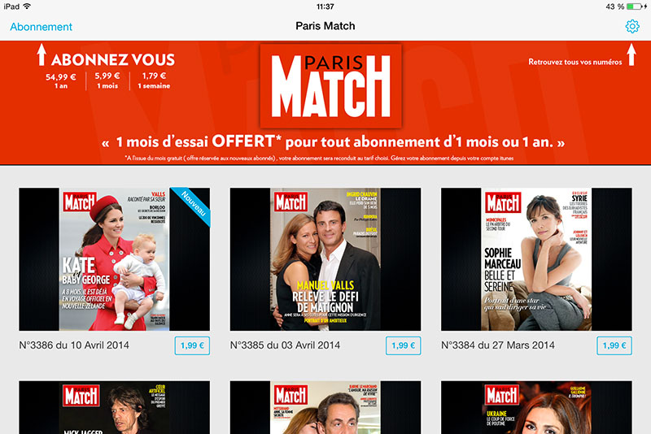
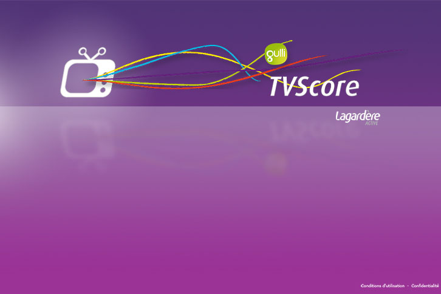
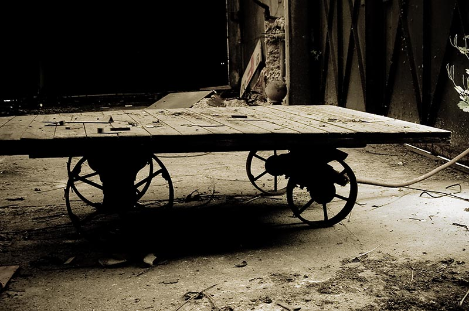
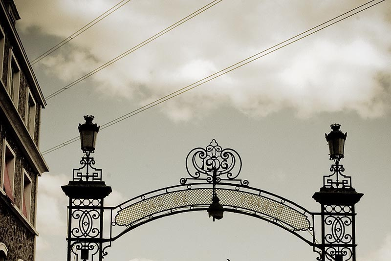
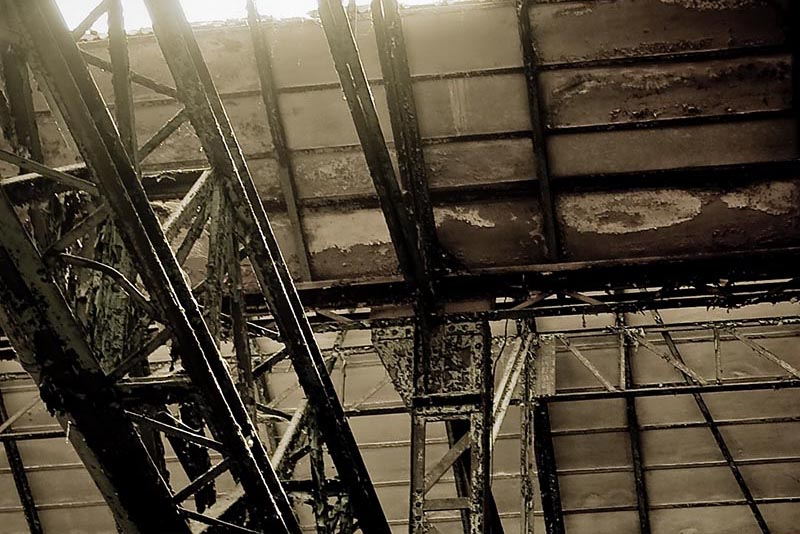

Projets
Accent Sud
PIdentitié graphique de la société Accent Sud
Paris Match
Développement et installation d'un mur numérique interactif à la rédaction de Paris Match, pour suivre en direct la production du magazine. Application Node Webkit (https://nwjs.io/), chargé de collecter les informations auprès des différents systèmes éditoriaux afin de représenter la parution en cours. Cette application expose aussi son propre service web (responsive) accessible par le réseau de l'entreprise afin de gérer les différentes options d'affichage ainsi que les actions de navigation en temps réel (scoll, zoom, etc). Ce mur est actuellement en fonctionnement 24/24 7/7
LA PRESSE SUR TABLETTE
Ecriture du chapitre dédié à l'ergonomie et la navigation. ISBN 978-2-35307-031-2
-

- 
Journal du Dimanche
Dans le cadre de la modernisation de l'application enrichie (iPad) du Journal du Dimanche, réalisation de l'ensemble des modèles statiques et dynamiques de l'application. Solution basée sur une intégration WoodWing / Indesign / InCopy / Marklogic / Aquafadas et du templating HTML5 CSS3
- 
Paris Match
Gestion / développement de l'application iPad de Paris Match
Solution basée sur une intégration Woodwing / Indesign / DPS
- 
WebDesign - Integration
Intégration de produits tiers, reflexion ergonomique autour des outils "web" du quotidien. (petite selection)
- 
- 
- 
Gaz de France - Gennevilliers
Inventaire photographique de la friche industrielle Gaz de France à Gennevilliers avant destruction.
Cet inventaire se compose de deux "éléments" :
- un
livre
présentant une selection de photographies "traditionnelles"
- un ensemble de panoramiques destinés à l'exposition
Chartreuse du Mont Dieu
Située au cœur des Ardennes, la chartreuse du Mont-Dieu s’est construite dans une vaste clairière, au milieu d’une immense forêt de 1.123 hectares, pleine d’arbres séculaires et traversée par des sources, alimentant jadis de nombreux étangs.
Ce livre est un aperçu des panoramiques réalisés au fil des saisons.
Etat des Jeux
En 2004, Paris est officiellement ville candidate pour les jeux olympiques de 2012. Le projet propose d’installer le village olympique sur le site des « Batignolles ». C’est une surface de 45 ha en semi-friche. Domaine de la SNCF dans sa plus grande part, il est occupé par quelques entreprises de long de la rue Cardinet.
Etat des jeux propose un inventaire sur la situation de cette fiche au moment où le comité olympique examine la candidature de Paris.
Deux formats sont retenus, tout d’abord un format « traditionnel » dont une petite sélection fait l’objet d’un livre, ensuite, un format « grand angle » composé d’une quarantaine de tirages panoramiques de 3 mètres.
Identité graphique
Petite selection d'identités graphiques, réalisées au fil des années.